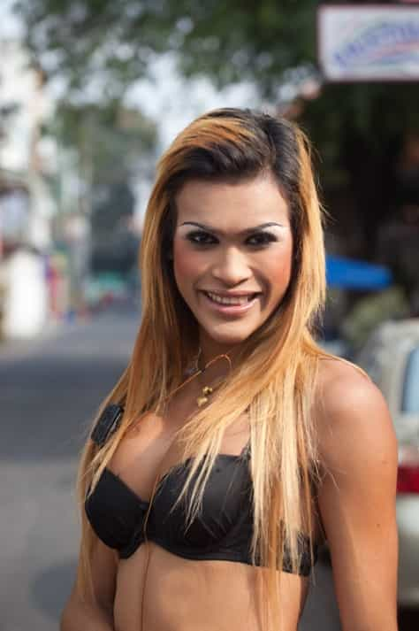
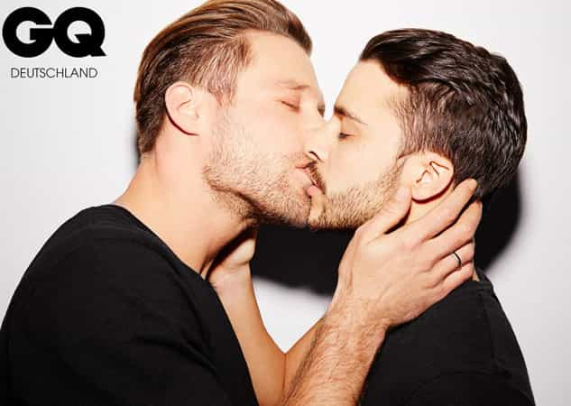
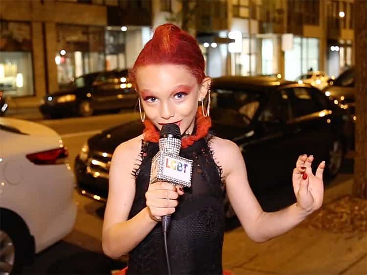

In 2017, straight men who refuse to date biological males dressed like women were shamed on a number of occasions for being “transphobic.” We should expect that at some stage, very possibly in 2018 or 2019, heterosexual males will also begin to be attacked en masse for not wanting to have sex with men.
Obsessions over “gender fluidity” and the rise of SJW brainwashing amongst kids, including those in elementary school, mean that expressing a perfectly normal and healthy heterosexual preference is becoming increasingly hard. In Australia, one notorious transgender Marxist, Roz Ward, went so far as to make up “statistics” saying that half of all teenagers are sexually attracted to their own sex. What will the claimed figure be in 2018 or 2019 and how will that impact on guys who know they are only attracted to women?
You don’t have a right not to date transgenders

Soon your lack of a right not to date a transgender “woman” will be extended to gays.
After straight men understandably began to report transgenders messaging them on Tinder, outlets such as The Huffington Post came to the rescue, decrying the rampant “transphobia” in the dating market. In another instance of typical SJW hysteria, a contestant on The Bachelorette got into hot water for verbalizing a common enough concern of men, namely that heavily dolled-up transgender “women” regularly try to pass themselves off as biological women. With this sort of putrid political climate, it is very easy to imagine a time when not being sexually attracted to Barry or Steve will be equated with anti-gay “bigotry” as well.
Indicating the warped social totem pole that is regularly putting transgenders above women, straight females are also being shamed, albeit to a lesser extent than heterosexual men. CNN, for example, just couldn’t figure out why the majority of women weren’t open to dating this transgender “man,” as if genitalia were a completely irrelevant part of sexuality. Who would have known!
The stage is set

GQ used to be geared towards men who wanted to dress well but were still straight. Not anymore.
SJWs do not want tolerance. They want a kind of uniformity, where the groups we are meant to accept and praise actually end up dictating what someone else can or cannot do sexually. The failure of most men (or women) to want to date a transgender is a setback, for sure, but this will not stop SJWs from continuing their agenda in the same and other ways.
Even “men’s” magazines are now part of the fray, joining a series of outlets celebrating supposedly straight males who screw gay guys. GQ continued its abysmal fall in 2017 by publishing “The straight men dating men and the gay men who fall in love with them.” Salon, however, is a very unsurprising offender for its long-term pushing of straight men’s “malleable” sexualities. All we are missing at the moment are widespread calls for men to stop being “homophobic” and give themselves to other men fully.
Just wait and see

An 8-year-old boy from Montreal who is forced to sexualize himself for LGBT audiences.
As a result of the negative reception most folks gave to the idea of dating a transgender, some might say that this article is alarmist. Well, I would counter that since we have already seen the sexualization of children according to SJW ideology, it is perfectly foreseeable that straight adult males will be encouraged or shamed into wanting sex with men. If this article is proven wrong, it will be either due to blind luck or because we see positive, long-awaited developments in the West.
Remember, probably well over 50% of discussions about sexuality nowadays concern lesbian, gay, bisexual, or transgender experiences, despite people of these orientations comprising perhaps 4% of the population. If this is not a sign that your heterosexuality is considered abnormal or not fully acceptable by SJWs and their enablers, I don’t know what is.
Read More: Studies Prove Lesbians Batter Their Partners More Than Straight Men